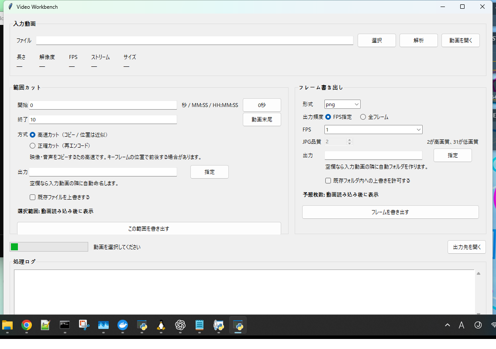

Fast / Precise Cut
ストリームコピーによる高速カットと、時間位置を優先する再エンコード方式を分けて選択できます。
Python / Desktop / FFmpeg
v0.4.0 RC

以前使っていた動画カット用ツールとフレーム書き出し用ツールを、1つのWindowsデスクトップアプリとして再構成しました。動画情報の確認、指定範囲の切り出し、PNG / JPGのフレーム書き出しを同じ画面から操作できます。
ストリームコピーによる高速カットと、時間位置を優先する再エンコード方式を分けて選択できます。
PNG / JPG、全フレームまたはFPS指定に対応。実行前におおよその出力枚数も確認できます。
ffprobeから動画の長さ、解像度、FPS、映像・音声ストリーム、ファイルサイズを取得して表示します。
動画は外部サービスへ送信せず、PC上のFFmpeg / ffprobeを使ってローカルで処理します。
Windows向けソースリリースです。Python 3、FFmpeg、ffprobeを使用します。